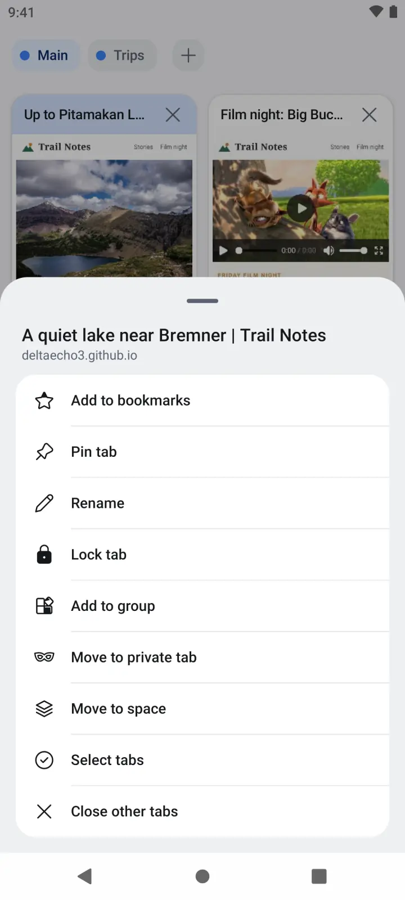
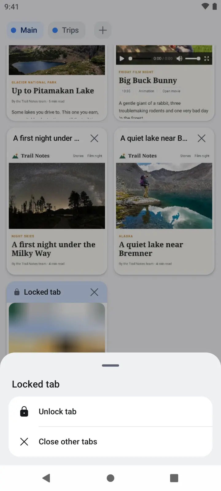
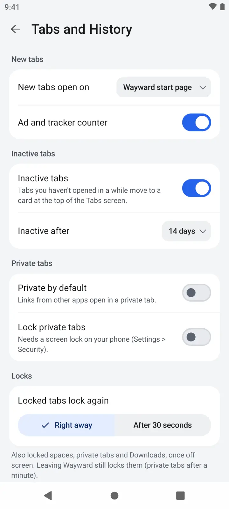
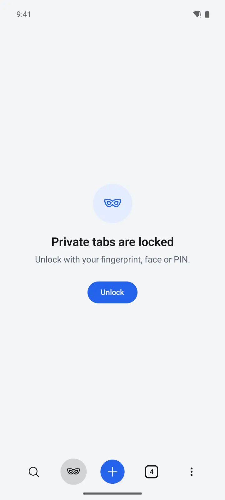
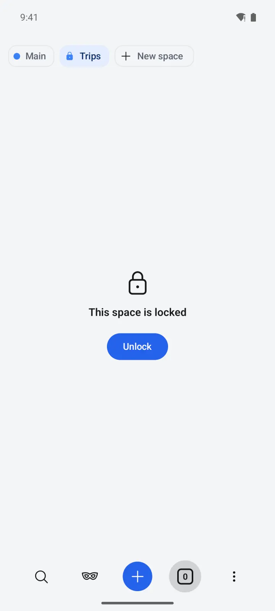

Lock a tab, your private tabs, a space or Downloads
How-to
Locks keep what's behind them hidden until you use your phone's fingerprint, face or PIN to open it. Use them if someone else might pick up your phone. The locks need a screen lock on your phone; without one, Wayward asks you to set one first.
A lock controls who can see something. It isn't extra encryption: what's behind it is stored as it would be without the lock (see what's encrypted).
Lock one tab
Open the ⋮ menu on the page and tap Lock this tab, or hold the tab on the Tabs screen and tap Lock tab. Locking a tab, opening it while it's locked, and taking its lock off each ask for your fingerprint, face or PIN.

While it's locked, its page, address and videos stay hidden. The tab shows This tab is locked, with Unlock with your fingerprint, face or PIN. and an Unlock button, and the address bar only says Locked tab. On the Tabs screen its card shows a lock (or a blurred picture) and Locked tab, and its menu offers only Unlock tab and Close other tabs. Unlock tab takes the lock off for good.

Lock your private tabs
Settings > Tabs and History > Lock private tabs is on by default. While it's on, every way into private tabs asks for the unlock first, even when none are open yet. Locked, they show Private tabs are locked with Unlock, and the phone's prompt is titled Unlock private tabs. One unlock opens them all. Turning the lock off asks for the unlock too. See private tabs.


Lock a space
Any space but Main can be locked: on the Tabs screen, open ⋮ and turn on Lock this space, or turn it on in Edit space. One unlock opens the whole space, and its pages are never added to history. Locked, the space shows This space is locked with Unlock in place of its tabs, and a lock in its color instead of its dot (on its chip, in the space picker, in Settings > Spaces and in the address bar). Deleting a locked space asks for the unlock first.

Lock Downloads
Lock downloads, under Lock in Settings > Downloads (or the gear on the Downloads screen), is on by default. Downloads asks for your fingerprint, face or PIN before showing anything: Downloads are locked, with Unlock and Back to browser. Turning the lock on or off asks too. It covers the files kept inside Wayward; files you saved to a folder on your phone are outside it.

When things lock again
Leaving Wayward locks everything again (private tabs a minute after you leave). Inside Wayward, Settings > Tabs and History > Locked tabs lock again decides:
- Right away (the start): a locked tab, locked space or your private tabs lock as soon as you go back to the Tabs screen or another tab, and Downloads as soon as you leave it.
- After 30 seconds: they wait half a minute first. Choosing this asks for the unlock.
While Settings, History, Bookmarks or another of Wayward's own screens is open, a locked tab, locked space or your private tabs lock once they've been out of sight for 30 seconds, even with Right away. Come back sooner and you don't need to unlock.
What else a lock does
- Closing a locked tab (its X, a swipe, Close all tabs (not private), Close other tabs, Close group or Close tab) asks for the unlock first.
- Clear browsing data asks for the unlock first when it would close locked tabs, or private tabs behind their lock.
- A locked tab on screen, an open locked space, locked Downloads and a chat that holds locked content always block screenshots and the recent apps picture.
- Whatever locks stops playing, and a locked tab plays nothing and shows no media controls.
- A chat with the assistant that used a locked tab, or holds something from Downloads, locks with it: This chat used a locked tab or This chat holds something from Downloads, with Unlock and New chat. The prompt is titled Unlock the chat.
More in Privacy & security
- Lock Wayward down
- See what was blocked, and let a broken site through
- Choose how much Wayward blocks
- Hide pop-ups and overlays on pages
- Secure connections, Secure DNS and the other privacy settings
- Camera, notifications and other site permissions
- Use private tabs
- Keep sign-ins apart with spaces
- Clear data, Shred a site, or delete everything